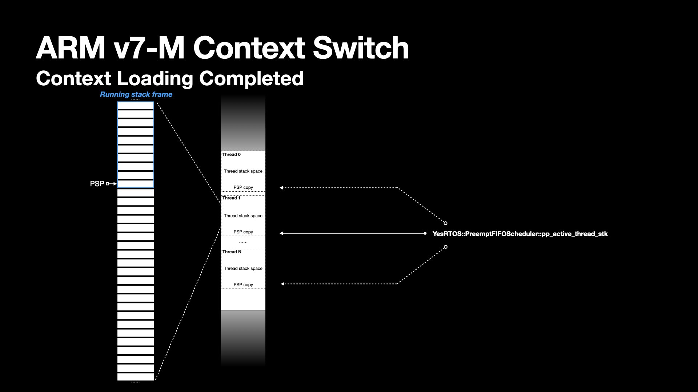
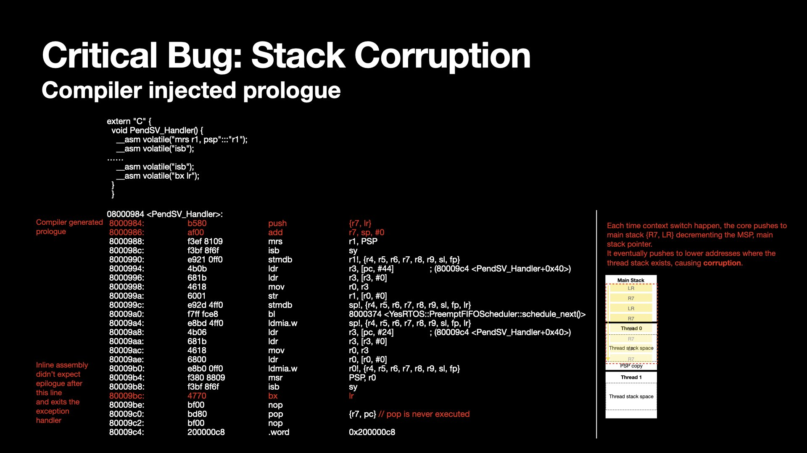

YesRTOS is a prototype real-time operating system developed for ARM v7-M/v8-M, with a lightweight memory footprint of approximately 7.5 kB.
It is implemented using C++ for structured and modular design, C for efficient low-level system operations, and Assembly (with C expression operands) to enable precise hardware control and fast context switching.
I’ve developed YesRTOS drawing on a range of memory management techniques, scheduling strategies, context switching methods, and synchronization primitives.
In this article, I’d like to share some key mechanisms related to its context switch implementation.
In ARM Cortex-M (v7-M/v8-M) architectures, the processor features two separate stack pointers:
In assembly code or disassembly listings, I see often see instructions referencing the general SP (Stack Pointer) without explicitly indicating whether it refers to MSP or PSP.
To determine which stack pointer is in use, we must consider the current processor mode:
Isolation and redundancy are core design philosophies in reliability engineering and mission-critical systems.
To bootstrap the first thread, the core needs to fabricate this thread's context as if it were running.
The initialized context has two portions -- software saved and hardware saved.
In the below demonstration, I have color-coded the portions.
The red region highlights the registers automatically pushed to the stack by hardware during an exception entry.
Exceptions differ from normal call flow because their triggering is non-deterministic.
The hardware is designed to automatically push these registers onto the current stack to handle events efficiently.
The yellow box highlights registers pushed to the stack by the software, implemented as part of the kernel context switch service routine.
The two portions constitute the full set of registers the CPU expects after exception return.
Even though the thread has never executed, its stack is manually crafted to resemble that of a preempted task.
This technique effectively simulates the state of an interrupted thread, allowing the CPU to resume execution seamlessly.
Beyond this example, on processors equipped with a Floating Point Unit (FPU), the floating-point registers (S0–S31) and the Floating Point Status and I Register (FPSCR) must also be saved and restored during context switching.
This ensures that floating-point operations continue correctly after a context switch, maintaining computational integrity.
Typically, the FPU context is saved conditionally to optimize performance and minimize context switch overhead.
Once the initial context has been fabricated for the first thread, the kernel must transfer control to it.
This transition is initiated by triggering a SVC (SuperVisor Call) exception.
This instruction is provided by the ISA to invoke operating system services that run in privileged mode.
The handler implements several actions including loading the first thread's context, restoring PSP copy, and branching with link register loaded with EXEC_RETURN (such as 0xFFFFFFFD).
The software-saved portion is restored using the ldmia instruction.
The hardware-saved portion is automatically restored by the processor upon exiting the SVC handler.
BX LR is commonly used to return control from a callee function to its caller function.
In a normal function call, BX LR will branch the processor to start executing the next PC with address from LR.
Exception handling via the vector interrupt controller works differently—here, the PC directly jumps to the ISR without a typical function call mechanism.
It also differs from a function call in that an interrupt service routine has no input parameters and output return value.
When returning from an exception, EXEC_RETURN in LR has special meanings.
The processor checks the EXEC_RETURN value to determine:
A time slice defines a period after which the kernel switches between one thread to another selected by the scheduler.
A processor timer, such as SysTick, is configured to trigger a PendSV call exception periodically.
PendSV is a special exception type intended for deferred context switching. It is typically triggered by a timer interrupt by setting ICSR.PENDSVSET to 1.
In v7-M/v8-M, PendSV has the lowest possible priority among all exceptions, so it will not preempt critical tasks with higher priority.
Here's a demonstration for PendSV handler behavior when initiating a thread switch.
Imagine a set of stack frame containing functions calls for a thread, belonging to the memory space allocated by the kernel at the thread registration.
In addition, each thread as individual object also contains independent routine entry, event bits, copy of PSP defining the top of the stack as it get switched out.
At the PendSV exception handler entry, the hardware pushes xPSR, PC, LR, R12, R3 - R0 to the process stack.
In PendSV handler, R11-R4 will then be pushed to the stack by stmdb instruction.
The architecture defines a full descending stack. stmdb stores value from registers to the stack, and decrements the PSP pointer. This continues until all specified registers have been stored.
The stack grows as context gets saved. Before scheduling picks next thread, the kernel needs to keep track of the latest PSP pointer location.
The kernel defines a double pointer pointing the PSP of a thread -- the YesRTOS::PreemptFIFOScheduler::pp_active_thread_stk in its scoped namespace.
The PSP is saved by dereferencing it and storing the result in the thread object, preserving the task’s context.
At this point, the thread is in a saved state.
Next, the exception handler branch to the scheduler deciding next thread to execute.
The kernel's scheduler interface abstracts selection mechanism. I plan to write a different article to discuss the details.
As part of the scheduling, the pp_active_thread_stk is again updated, pointing to PSP of the selected thread to run.
The selected thread is not ready to run until its context is fully restored.
The saved PSP value is retrieved from the thread object and reloaded into the PSP register.
The registers are popped from the process stack, and the PSP is incremented using the ldmia instruction until all registers are restored.

The PendSV exception handler exits by BX LR, with LR containing the same EXEC_RETURN as in the SVC handler.
At this point, the kernel has successfully switched from one thread to another.

During early RTOS testing, I encountered instability when context switching between multiple stub routines.
The sequence typically followed a round-robin pattern—thread 0 → thread 1 → thread 2 → thread 0 → ...—until a crash occurred.
Before the crash, the PC, LR, and other registers of the crashing thread (e.g., thread 2) contained garbage values, strongly indicating memory corruption.
To validate this hypothesis, I increased the stack size for each thread. Interestingly, the number of successful switches before crashing increased—reinforcing the suspicion of a stack overflow caused by memory corruption.
I began a systematic investigation: reviewing code, writing minimal test cases to isolate the problem, and aligning my mental model with the chip's behavior.
From a development standpoint, to avoid C++ name mangling, both the timeslice logic and exception handlers (e.g., PendSV) were written in C with inline assembly.
However, inspecting the disassembly revealed that the compiler had unexpectedly injected prologue and epilogue code around my `PendSV_Handler`, despite the body being entirely inline assembly. Specifically, it appended instructions such as `pop {r7, pc}` after my own `bx lr`, which caused the stack to grow by two extra entries each context switch. Over time, this subtle and cumulative stack growth caused threads to overwrite each other’s memory regions.
I fixed this by adding a compiler directive to the exception handler, marking it as 'naked' function.

This attribute tells the compiler that the function is an embedded assembly function.
It explicitly instructs the compiler not to generate the standard function prologue and epilogue code.
I was delighted to finally resolve this problem after days of confusion.
These strategies combined help isolate and fix subtle bugs in context switching logic.